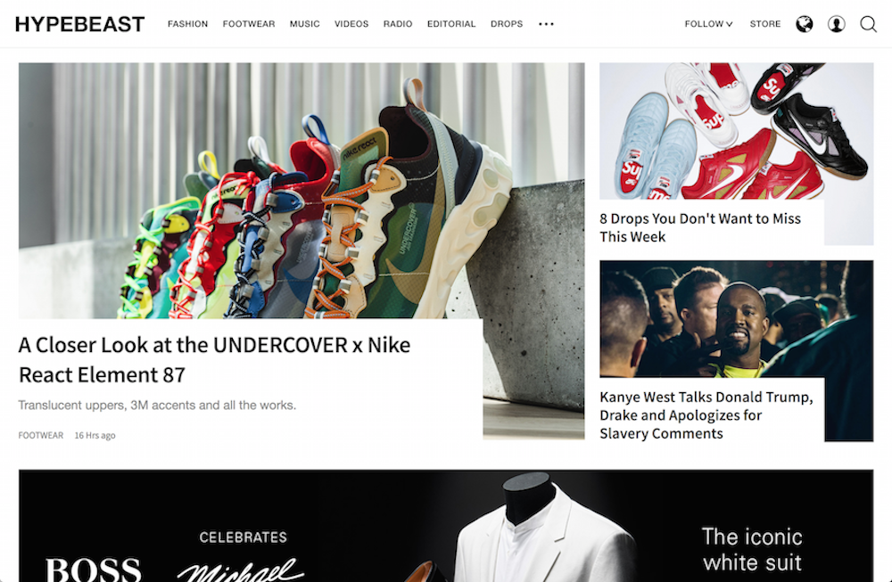
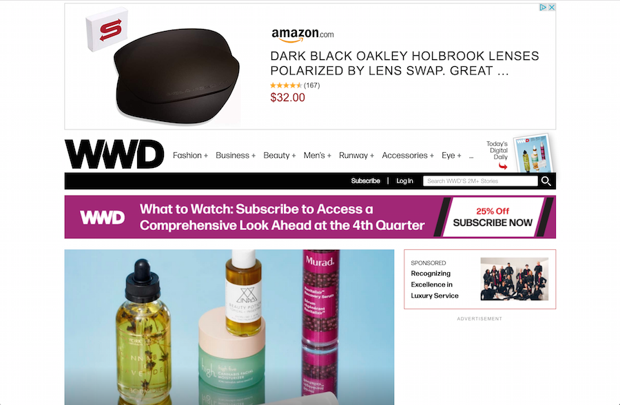

A Website Comparison
A Successful Website
Hypebeast is one of my favorite websites because of its excellent usability. It is easy to figure out what this website is about and what it provides for its users. It is overall very efficient and easy to use due to its clear menu bar and contents. This website's accessibility is one of its successful elements because it is really easy to find the category of trending news a user wants to see. There are no outstanding errors to the typical user when using this site. It has good learnability because the design of this website is very visually pleasing with extremely organized spaces for each category of interest. On the top right corner of this website has a search button allowing users to search for specific articles, be able to log in or create an account, and most importantly change the language of the website. Being able to change between English, Chinese, Japanese, Korean, and French, this website shows its use by people around the world. Also, Hypebeast uses many photographs and images to keep the user's attention while going through different articles and rankings. This website also has an application for the iPhone and Android phone making it easily accessible in the correct format. Overall, Hypebeast has an organized yet highly accessible design which makes it user-friendly and easy to re-discover.
A Less Successful Website
The Womens Wear Daily, WWD, is a less successful website. Although this website offers a wide range of information and trends of the fashion world, its organization makes it difficult to navigate for new users. Due to poor advertisement placement, the site appears unprofessional and unorganized. Although this website's menu bar is clear, the sides of the page become white as the scale increases. For first time users, the abundance of information and the many different categories might be overwhelming. This website becomes confusing because the whole page is continuous and there are no separations between different elements and categories. On the top right corner, there is a search bar, a login button, and a subscribe button. Since this website is not free, a paid subscription is necessary to be able to unlimitedly read articles. This website is very visually busy because of all the information, which includes both text and images. These elements make for a less successful website for new users due to its difficult learnability. Overall, WWD is most likely confusing for first-time users and hard to navigate even for repeated users, therefore it has low usability.
